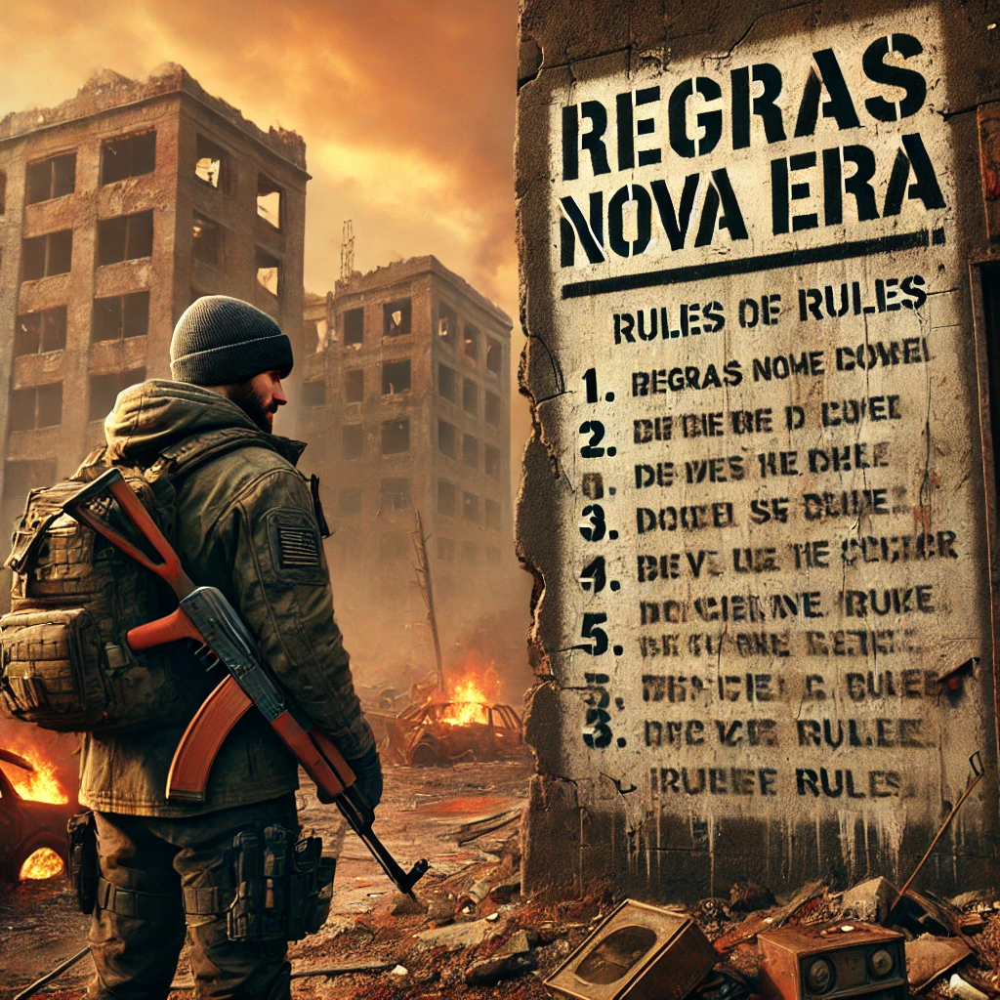

📜 Regras do Servidor - NOVA ERA
- 1.1 🚧 Não construa em estradas: As estradas são essenciais para o tráfego e o comércio entre jogadores. Preserve-as livres para todos.
- 1.2 🏙️ Respeite as áreas urbanas: Não construa nas cidades principais, pois são áreas de saque abertas para todos os jogadores.
- 1.3 🔐 Bases trancadas são sagradas: Respeite o esforço alheio. Não invada ou roube bases devidamente protegidas.
- 1.4 🚪 Bases abertas são vulneráveis: Se você deixa sua base desprotegida, prepare-se para correr riscos. Segurança é essencial.
- 1.5 🚗 Cuidado com seus veículos: Veículos deixados sem supervisão poderão ser confiscados ou saqueados.
- 1.6 ⚠️ Exploração de bugs é proibida: Usar exploits ou glitches para vantagem pessoal compromete a integridade do jogo e será punido.
- 1.7 🤝 Colabore com outros jogadores: Ajudar a comunidade fortalece o servidor e traz benefícios mútuos.
- 1.8 🎉 Participe dos eventos: Eventos regulares com recompensas desafiadoras são realizados para a comunidade.
- 1.9 💀 Modo Hardcore: A morte tem consequências graves. Planeje cada passo e esteja sempre preparado para o pior.
- 1.10 🛡️ Respeito acima de tudo: Todos os jogadores devem se tratar com respeito. Ofensas ou assédios serão punidos.
- 1.11 ⚖️ Banimentos por Reporte: Jogadores que violarem as regras podem ser banidos após denúncias verificadas.
- 1.12 👮 Respeito à Administração: Obedeça as orientações dos administradores. Eles trabalham para manter o equilíbrio do servidor.
- 1.13 🔕 Não compartilhe informações sensíveis: Passar informações que possam afetar outros jogadores negativamente é proibido.
- 1.14 🚨 Sistema de Avisos: Após dois avisos por violação de regras, o jogador será banido do servidor.
- 1.15 ⚔️ PvE Prioritário: Evite interferir na experiência PvE de outros jogadores. Jogar juntos, sem confrontos diretos, é o foco.
- 1.16 🧩 Não abuse de mecânicas: A manipulação das mecânicas de jogo para ganho injusto é proibida e será punida.
- 1.17 🌍 Preserve o ambiente: Evite destruir recursos naturais desnecessariamente. Todos devem ter acesso.
- 1.18 🔄 Respeite o ciclo de saque: Não repita o saque em uma área até que ela se recupere totalmente para evitar desbalanceamento.
- 1.19 🛑 PvP Proibido: Este é um servidor PvE. Ataques entre jogadores não são permitidos, exceto em eventos específicos.
- 1.20 🚷 Respeite o espaço alheio: Não construa perto das bases de outros jogadores para garantir a privacidade de cada um.
- 1.21 💬 Use o chat de forma adequada: Não faça spam, evite palavrões e mantenha o ambiente agradável para todos.
- 1.22 🔇 Silêncio durante invasões: Evite conversar demais no chat durante invasões para não distrair os jogadores.
- 1.23 🗣️ Reporte comportamentos inadequados: Use os canais apropriados para denunciar jogadores que não seguem as regras.
- 1.24 🎖️ Incentive a ajuda mútua: Colaborar e ajudar novatos é incentivado para manter uma boa comunidade.
- 1.25 💼 Comércio justo: Qualquer tipo de comércio deve ser justo. Enganar jogadores em trocas não é tolerado.
- 1.26 🏢 Proibido modificar edifícios públicos: Estruturas como bases e edifícios públicos devem permanecer intactas para todos.
- 1.27 ⚙️ Reporte problemas técnicos: Se encontrar bugs ou problemas, reporte-os à administração para melhoria do servidor.
- 1.28 🔍 Não persiga outros jogadores: Evite seguir jogadores sem permissão, pois pode atrapalhar suas atividades no PvE.
- 1.29 🏆 Jogue limpo nos eventos: Trapacear em eventos compromete a diversão e será punido.
- 1.30 🎭 Proibido uso de hacks: Qualquer software de trapaça é proibido e resultará em banimento imediato.
- 1.31 📵 Não faça publicidade de outros servidores: Evite divulgar outros servidores para manter a comunidade focada no Nova Era.
- 1.32 💻 Jogadores experientes devem orientar novatos: Os veteranos são incentivados a orientar novos jogadores.
- 1.33 🧲 Evite atrair hordas para bases alheias: Guie zumbis para longe de áreas protegidas para não prejudicar outros jogadores.
- 1.34 🚁 Não abandone veículos no mapa: Guarde seus veículos em áreas seguras para evitar que fiquem espalhados pelo mapa.
- 1.35 ⚔️ Defesa de base permitida: Utilize somente métodos permitidos para defesa de sua base, evitando abusos.
- 1.36 🌐 Participe da comunidade no Discord: Junte-se ao Discord para ficar atualizado sobre eventos, regras e novidades.
Voltar para a página inicial
